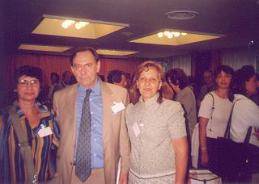

Juan Allende:
Presidente de la Asociación Grafopsicológica de España.
Profesor de Grafopsicología en la Universidad Pontificia de
Salamanca y en la Asociación Grafopsicológica.
Entre sus obras y múltiples ponencias y seminarios, cabe
destacar sus Apuntes de Grafopsicología y Grafopatología.
"Ante todo diré que es
un libro que lleva tras de sí un importante trabajo de
organización de todos los aspectos gráficos.
Combina, a mi juicio, acertadamente, la Grafología con los test de
Casa, Árbol, Persona, Wartegg y Bender.
Lo considero un libro útil a efectos de un estudio sobre casos
prácticos y desde este punto de vista no me cabe sino dar la
enhorabuena a sus autores por el resultado de su esfuerzo".
Madrid,
España. Enero del 2001.

Congreso Internacional de Grafología -
Bologna - Italia- 8, 9 y 10 setiembre 2000.